LLM serving notes
- Write a short introduction about US capital city.
- Washington
- D.C.
- is
- the
An LLM writes one token at a time and feeds each new token back in as input. Most of what makes LLMs hard and expensive to serve follows from that loop.
My notes on chapters 1 and 2 of Hands-On LLM Serving and Optimization by Chi Wang and Peiheng Hu (O’Reilly, 2026). Page numbers refer to the print edition.
Chapter 1
Introduction to model serving and optimization
What a model is from an engineer’s point of view, what serving it means, why it is worth understanding even if you buy it from a vendor, and the four common ways to serve models.
The one-line idea
Model serving is the supply chain of AI. A trained model has little business value until it reaches users with the right latency, reliability and cost. Recommendations at Amazon and Netflix, fraud checks at banks and airline chatbots all stop working when serving goes down.
Model serving makes a model available to users, applications and other systems (through APIs, web services or integrated workflows) so it can produce predictions on new, unseen data. Those predictions are called inferences. The book uses serving, inference and prediction interchangeably.
The authors name three reasons people find the topic intimidating: it assumes you already know model training well, there is no clear path from a getting-started tutorial to running a serious system, and there are too many frameworks, libraries and vendors to choose from.
Anatomy of a model
Pages 2 to 5
In serving we mostly treat a model as a black box: a set of executable files produced by training. Those files fall into three groups.
- Model data
- Weights and biases (what training learned) plus configuration: metadata needed to run the model, such as embeddings, label classes,
max_batch_size, and the input and output tensors. - Model architecture
- The structure: the types and number of layers, how they connect, and the operations they perform. It decides how input becomes output.
- Model execution code
- What actually runs. It builds the architecture inside the serving framework, loads the weights, and runs predictions.

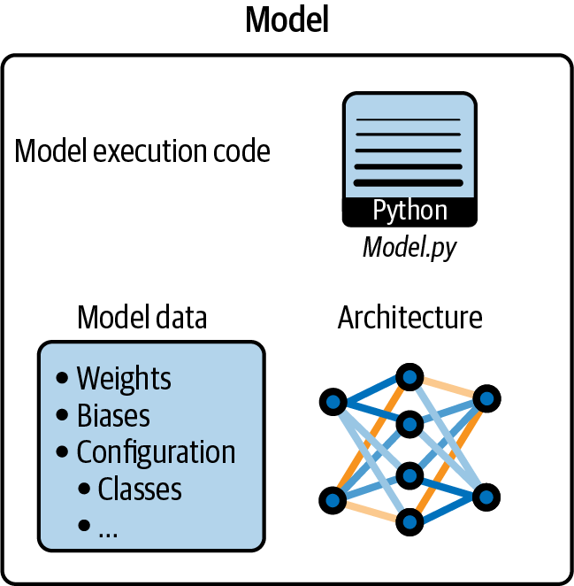
Models are programs, not static data
A model is not a passive data file. It carries execution logic and metadata, so think of it as an executable program that takes input and produces decisions.
The three parts in PyTorch
Architecture: usually a copy of the class from the training code
class TheModelClass(nn.Module):
def __init__(self):
super().__init__()
self.conv1 = nn.Conv2d(3, 6, 5)
self.pool = nn.MaxPool2d(2, 2)
self.conv2 = nn.Conv2d(6, 16, 5)
self.fc1 = nn.Linear(16 * 5 * 5, 120)
self.fc2 = nn.Linear(120, 84)
self.fc3 = nn.Linear(84, 10)
def forward(self, x):
x = self.pool(F.relu(self.conv1(x)))
x = self.pool(F.relu(self.conv2(x)))
x = x.view(-1, 16 * 5 * 5)
x = F.relu(self.fc1(x))
x = F.relu(self.fc2(x))
return self.fc3(x)Data: weights and biases live in the state_dict
torch.save(model.state_dict(), "model_weights.pt")Execution code: build, load, switch to eval mode, predict
model = TheModelClass(*args, **kwargs) # initialise the architecture
model.load_state_dict(torch.load("model_weights.pt", weights_only=True))
model.eval() # evaluation mode
pred = model(inputs) # run a predictionTensorFlow and other frameworks have different APIs, but the packaging idea is the same.
Keep architecture and weights in separate files
You can save everything in one file with torch.save(model, "model.pt"), but separating the class definition from the weights is more flexible. When the architecture changes between versions, some checkpoint parameters no longer line up with the new structure. These are nonmatching keys. PyTorch supports partial loading: compatible parameters load and the rest are skipped. That is how fine-tuning, adding layers and incremental architecture updates avoid retraining from scratch.
Model lifecycle: from training to serving
Pages 5 to 6
Training gets most of the attention, but a model only pays off once it is deployed, served reliably and run efficiently at scale.
- Data collection. Gather raw data (user interactions, sensors, logs, documents, third parties), then clean, label and curate it.
- Training and fine-tuning. Learn patterns from the data. Today this often means pretraining a foundation model and fine-tuning it on domain data.
- Evaluation. Check offline metrics (accuracy, loss, task benchmarks) to decide whether the model is ready for production.
- Deployment. Package and release the model. It is now a software artifact that must be versioned, tested and integrated.
- Serving. Make it reachable through APIs or services so it can run inference on new data, in real time or at scale. This is the book’s focus.
- Optimization and iteration. Keep improving performance, reliability and cost under live traffic. Production feedback drives more fine-tuning or retraining, which restarts the cycle.
Training a model and running it in production are different jobs. The constraints and goals change as soon as real users arrive.
What model serving is
Pages 6 to 8
Deploying a model in a production environment and setting up the software and hardware so it can receive input, run inference and return results efficiently, scalably and reliably.
| Where | Example | Why there |
|---|---|---|
| Locally (on-device) | A warehouse robot running an object-detection model such as YOLO on a Raspberry Pi with a Coral TPU | The robot must see and decide instantly |
| In-cluster (on-premises) | Semantic document search: Sentence-BERT inside the company cluster produces embeddings for internal documents | Data security and compliance, with no large data transfers |
| Remotely (cloud) | A customer support chatbot that sends the query and relevant documents to an LLM on Amazon SageMaker Inference or OpenAI | The vendor hosts or provides the model |

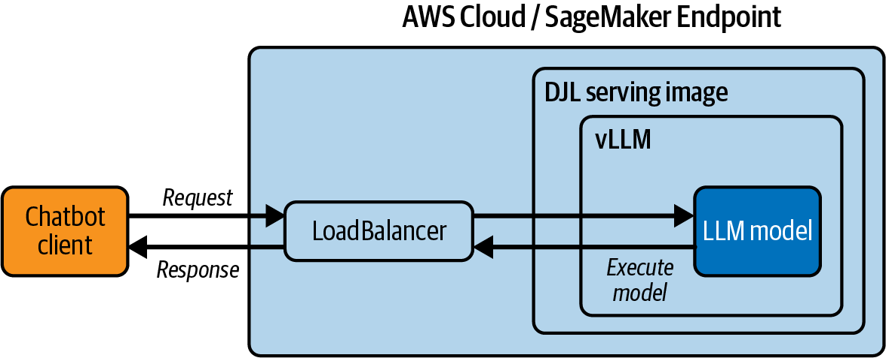
What serving engineers care about
Frameworks such as vLLM and TensorRT-LLM handle model execution, so the focus moves away from model internals and onto these:
- Deployment
- Pick the right hardware and make the model (from the training pipeline or open source) available to take input and return predictions.
- Scalability and availability
- Handle thousands to millions of requests with a consistent experience.
- Latency
- Answer fast: milliseconds for real-time use cases.
- Monitoring
- Track model performance, data drift and system health.
- Versioning
- Update and roll back models without disrupting clients.
- Security
- Protect sensitive data and control who can reach the model.
- Cost-to-serve
- The most decisive factor. It is the yardstick for comparing serving approaches.
The work relies on systems engineering, infrastructure design and end-to-end performance tuning so the model meets its business SLAs. It is not about inventing learning algorithms.
LLMs are the exception to the black-box rule
For LLMs you do need to understand the algorithm, especially Transformers. Every advance in LLM serving exists to remove a bottleneck in LLM execution, so knowing the architecture gives you the intuition for tuning throughput and latency.
Why study model serving
Pages 8 to 11
The book answers three objections.
“We just use a cloud vendor”
- Cloud hosting is a good choice in many cases: it handles hardware and patching and makes proofs of concept quick.
- It still needs thought. There are many products and features to choose from, integration with your systems takes engineering work, and vendor services need tuning for your use case.
- Vendor offerings are general-purpose. SageMaker alone has single-model and multi-model endpoints, each with different customisation, trade-offs and cost. Without understanding serving design it is easy to pick an option that costs more or limits you.
“Foundation model APIs are enough”
- Cost. Businesses rarely solve everything with one LLM. They use smaller, cheaper models where possible and keep LLMs for hard requests. Running an open source LLM on an AWS EC2 instance can be 30% to 60% cheaper than a managed service such as SageMaker, and reserving the instance can bring a discount of around 70%.
- A typical chatbot is several models: a small intent classifier to triage questions, an embedding model to encode questions and search for answers, and an LLM to turn the request into actions (backend API calls) and write the reply.
- Privacy and security. Sensitive or proprietary data may force an in-house solution.
- Fine-tuned models. Most vendors either cannot serve your fine-tuned model or charge more for it. In early 2025 OpenAI charged 50% more. Meanwhile small models keep getting better and can be fine-tuned for faster, more consistent and cheaper results.
“Running our own stack is expensive”
- Education startup. A managed provider is the right start for validating the idea. As usage grows the bill becomes unsustainable, so moving to open source LLMs with an optimised serving framework cuts cost while keeping the experience good.
- CRM company. High request volume plus sensitive customer data (emails, Slack, calls, CRM records) makes full outsourcing risky and costly. An in-house stack lowers cost per inference, helps with GDPR and HIPAA, and gives control over latency.
- The other side. In-house serving needs up-front spending on specialised hardware and engineers who can run it. The decision depends on security needs, project maturity, expected scale and whether the organisation can sustain the operations.
There is no one-size-fits-all solution
No architecture is permanent. Algorithms and serving technology keep changing, so the goal is to understand the fundamentals well enough to judge new options and not be locked into one framework or vendor. Outsourcing is a fine starting point, and you keep re-checking whether in-house serving would win on cost, security and flexibility.
Why optimize model serving, especially for LLMs
Pages 11 to 15
A model that answers correctly looks finished. Under real load a naive LLM deployment fails in three ways: latency grows, throughput plateaus well below what the hardware can do, and cost scales linearly or worse with usage.
- Throughput
- How many predictions are processed per unit of time.
- Latency
- How long one prediction takes.
- Model serving optimization
- Improving serving performance: lower latency, higher throughput, better use of resources, with cost kept under control.
Scale of the problem: in 2023 Alphabet’s chairman John Hennessy told Reuters that an LLM request can cost about 10 times as much as a keyword search.
Training frameworks and serving frameworks want different things
| Aspect | Training | Serving |
|---|---|---|
| Lifecycle stage | Prepares the model | Deploys it to production |
| Objective | Learn the weights by minimising a loss on training data | Generate predictions on new input, efficiently |
| Computation | Very heavy: repeated weight updates with backpropagation and gradients | Forward pass only, with no backpropagation or weight updates |
| Throughput and latency | Wants high throughput (samples per second) with large batches in parallel | Wants low latency per request, often with single or small batches |
| Resources | Powerful GPUs or TPUs and distributed training. Llama 3 405B was trained on 16,384 NVIDIA H100 GPUs | Low-latency, resource-efficient execution on CPUs, edge devices or inference GPUs, using runtimes such as TensorRT and ONNX Runtime |
So a training setup is the wrong tool for serving. Purpose-built serving frameworks include NVIDIA Triton Inference Server, vLLM and SGLang. Hugging Face Transformers and plain PyTorch are baselines designed mainly for training.
Example: vLLM
vLLM is an LLM serving engine from UC Berkeley’s Sky Lab, built for high throughput and low latency. It exposes many tuning knobs. The book’s example runs openai/gpt-oss-20b on H100 80 GB GPUs:
python -m vllm.entrypoints.openai.api_server \
--model openai/gpt-oss-20b \
--dtype bf16 \ # model precision
--gpu-memory-utilization 0.9 \
--max-num-seqs 16 \ # max concurrent requests (batch size)
--max-num-batched-tokens 16384 \
--tensor-parallel-size 2 # share the model across two GPUsPagedAttention, vLLM’s way of managing the KV cache, is on by default. Chapters 6 and 7 of the book explain these options.

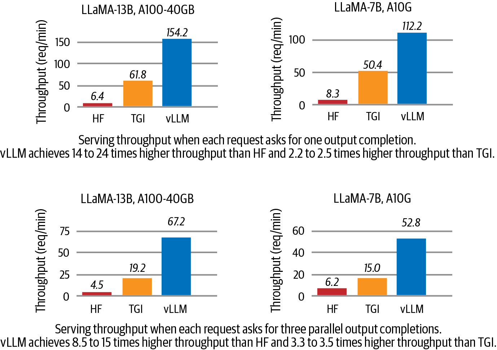
| Setting | vLLM vs HF | vLLM vs TGI |
|---|---|---|
| One output completion per request | 14 to 24 times higher throughput | 2.2 to 2.5 times higher |
| Three parallel completions per request | 8.5 to 15 times higher | 3.3 to 3.5 times higher |
Configuration alone can change performance by an order of magnitude
Every option in a serving framework is a possible optimisation. Hosting DeepSeek R1 on vLLM, the authors went from 38 to 600 tokens per second (about 15 times) with two changes: enabling FP8 MLA kernels and increasing the batch size.
What optimisation is for
For production LLM systems optimisation is required. The aim is to meet business SLAs for latency and throughput at a sustainable cost, and squeezing out extra speed is secondary to that. GPUs are expensive, so more throughput and lower latency on the same hardware changes the economics.
Serving paradigm 1: on-device (edge)
Pages 15 to 19
The model runs directly on the user’s device (phone, drone, robot, camera, VR headset) where the data is produced, with no need for a constant connection.
- Cost-effective
- Less dependence on cloud infrastructure. A smart speaker recognising speech locally pays no per-call API fee.
- Efficient
- Fast responses and better power efficiency on AI-optimised hardware, such as real-time photo enhancement.
- Private
- Data never leaves the device, as with biometric data in a health app.
- Personalised
- The model can be tuned on the user’s own data on the device, like a keyboard learning a typing style without uploading keystrokes.

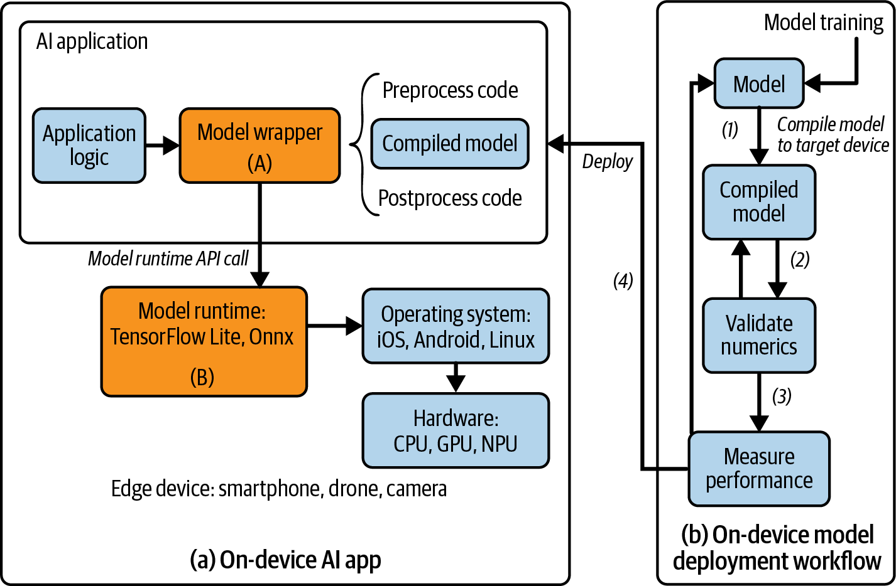
Two key components
- Model runtime (B in the figure)
- A framework that executes models efficiently on a given hardware platform. It sits between the trained model and the device hardware, hides differences across hardware and operating systems, and applies hardware-specific acceleration. Many runtimes support delegates, which hand compute-heavy operations from the CPU to a GPU or other accelerator. Popular runtimes: LiteRT, ONNX Runtime, Core ML.
- Model wrapper (A in the figure)
- Written by the app developer. It gives the application logic simple inference functions and hides the runtime details: preprocessing input, loading the model into the runtime, executing it, and postprocessing output.
Flow: application logic calls the wrapper, the wrapper converts data and calls the runtime, and the runtime executes on local hardware.
Getting a model onto a device
- Compile. Convert from the training format to the runtime’s format. For LiteRT, a PyTorch ResNet becomes a
.tflitefile:ai_edge_torch.convert(resnet18.eval(), sample_input). - Validate numerics. Run the same inputs on the training server and on the device and compare outputs, to confirm conversion did not hurt accuracy.
- Measure performance. Confirm the device hardware runs the model fast enough for the business need.
- Deploy. Ship the optimised model inside the app install or update.
Tools such as Qualcomm AI Hub automate compilation, optimisation and validation.
Good fit
- Privacy-first workloads where raw data must stay on the device (biometrics, health data)
- Ultra-low latency: gesture recognition, robotics control loops, AR and VR, real-time audio
- Disconnected or unreliable networks: industrial equipment, remote sensors, vehicles, drones
- IoT, smart cities and robotics with task-specific, power-efficient models
Constraints
- Limited compute, memory and storage. Small models such as Gemma 3 270M fit, but most large models do not
- Power: heavy models drain batteries
- Updates are hard, since every device has to install them
- Inconsistent hardware: a model tuned for Apple’s Neural Engine may run poorly on a Snapdragon
When model size, traffic or operational complexity outweigh these benefits, serving moves to on-premises or cloud, which trade local execution for centralised compute, elastic scaling and simpler operations.
Serving paradigm 2: single-model service
Pages 19 to 24
The classic and most widely used cloud pattern. Each model, and each version of it, is deployed as its own web service with a prediction API over HTTP or gRPC. It is a standard microservices design: an API component in front receives requests and routes them to backend containers that run the model.

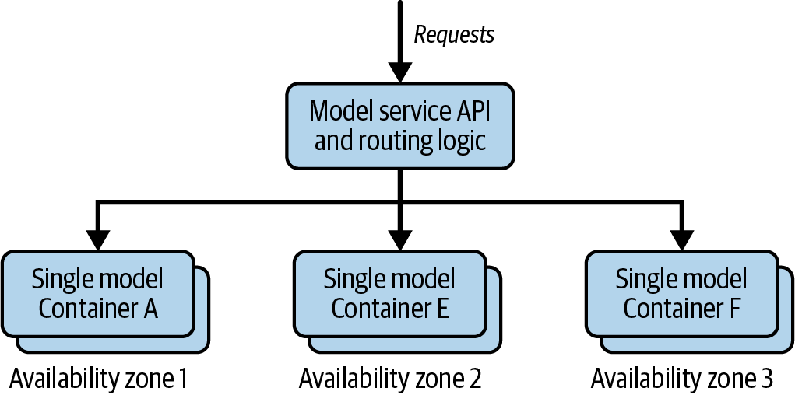
Containers are the foundation
A container packages an application with its dependencies, libraries and configuration so it runs the same on a laptop, a test server and production. Most server-side model execution happens inside a Docker container or Kubernetes Pod that wraps model management, resource management and execution logic, and exposes prediction over gRPC or HTTP.
Inside the serving container

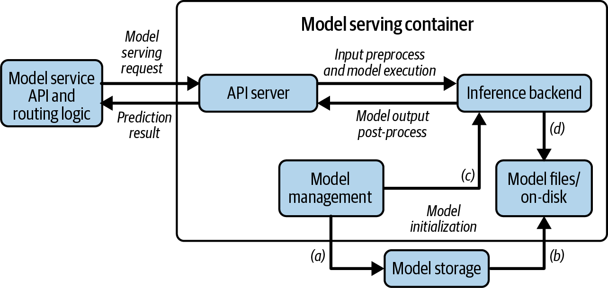
- API server
- Exposes inference over HTTP or gRPC so outside applications can send requests.
- Model management
- Prepares the model: download it, extract it to local storage, load it into the backend (steps a to d in the figure). It also watches cloud storage and refreshes the model in every container when the training pipeline or ops team uploads a new one.
- Inference backend
- Executes the model, usually with a serving framework (TensorFlow Serving, TorchServe) or library (vLLM, TensorRT-LLM).
Routing
The service API should keep all containers equally busy. Round robin (c1, c2, c3, c1, …) looks sufficient but ignores how much requests differ: a 5,000-token prompt takes far longer than a 100-token one. So c1 can still be working on a large request when the next one is sent to it, while c2 sits idle.
| Strategy | How it routes |
|---|---|
| Weighted round robin | Bigger servers get higher weights and more requests |
| Least connections | To the server with the fewest active connections |
| Least response time | To the server currently responding fastest |
| Dynamic load balancing | Uses live metrics: CPU, GPU, memory use or queue length |
Scaling
- Horizontal scaling (scaling out)
- Run more instances of the container across machines. With autoscaling, the infrastructure watches metrics such as CPU and memory use, inference latency and active requests, and adds instances when thresholds are crossed. On Kubernetes this is the Horizontal Pod Autoscaler (HPA).
- Vertical scaling (scaling up)
- For models too big for one machine’s GPU memory (the book cites GPT-4 and Llama-2-70B): use more powerful GPUs such as H100s or A100s and split the model across several GPUs or machines.
python -m vllm.entrypoints.api_server \
--model meta-llama/Llama-2-13b-hf \
--tensor-parallel-size 4 # serve across 4 GPUsPrefer intra-node over inter-node
Multiple GPUs in one machine (intra-node) beats spreading a model across machines (inter-node). Inter-node serving adds network overhead, latency and synchronisation complexity. Where you can, optimise the model to fit on one machine.
Why it is the default starting point
- Best performance: no resource contention, lower latency
- Easy scaling: each model scales on its own
- Simpler deployment and debugging: isolated logs, metrics and updates
- More reliable: one model crashing does not affect the others
- Hardware can be matched to each model, which helps cost control
Where it breaks down
Resource efficiency and cost. On an agent platform with 100 customers who each deploy 10 models, you would run 1,000 separate services. Maintaining, patching and monitoring them is overwhelming, and many models may never be called while still holding compute.
Serving paradigm 3: multi-model service
Pages 24 to 28
Several models share one serving container, along with its GPU, CPU and memory, and are loaded and unloaded on demand according to traffic. In the 1,000-model case, a model is loaded only when a customer asks for a prediction and unloaded when it goes idle or memory is needed.

Compared with the single-model container, two components are different:
- Model server inference backend
- Serves many kinds of model behind one unified prediction API, treating each as a black box. Internally it holds several inference backends, one per model type (TensorFlow, ONNX, PyTorch and so on). You do not build this yourself: NVIDIA Triton Inference Server is the usual open source choice, run inside the container or Pod.
- Model cache management
- Loads models from storage into the backend, and protects the container from overload with a least recently used (LRU) cache of loaded models, so the least-used ones can be unloaded when resources run high.
What happens when a request for model A arrives
- A is loaded: forward the request to the backend and return the result.
- A is not loaded: download it from model storage, load it into the model server, then forward the request.
- Memory or disk is above a threshold (for example 80% memory): find the least-used model in the cache, unload it from the backend and remove it from cache and disk.
Two new problems: routing and per-model scaling

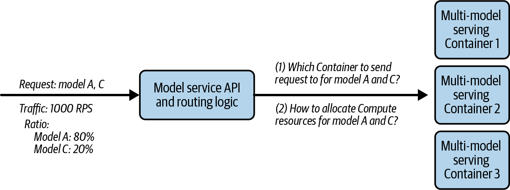
- Routing. A request should go to a container that already has the model loaded. Otherwise it pays extra latency from a cold start (the request waits while the model loads) or model swapping (evicting other models to make room).
- Per-model scaling. Traffic is uneven, and “hot” models need more instances than rarely used ones.

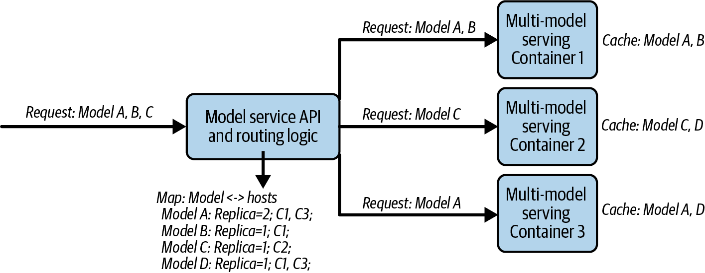
The fix sits in the routing layer:
- A replica attribute in each model’s metadata says how many instances to host across the containers.
- A route map (model to hosts) records which containers serve each model.
Model A with replica 2 is placed on C1 and C3 and its requests are spread evenly between them. The router raises or lowers the replica count as traffic changes, and decides where new instances go, which resembles a bin packing problem.
Where multi-model struggles
- Models too large for one GPU: there is nothing to share, or constant unloading causes loading overhead and cold starts.
- A model with high traffic that needs low latency and must stay loaded. Use a single-model service.
- Models with different security policies.
- Operational complexity: cache management, per-model routing and scaling, compatibility and dependency conflicts make deployment, debugging and monitoring harder.
Single-model and multi-model serving complement each other, and real platforms use both.
Serving paradigm 4: model serving platforms
Pages 28 to 29
As a business grows, placing single-model and multi-model services side by side is not enough. Two challenges appear:
- Tasks need several models working together. A voice assistant like Siri chains speech recognition, NLP, recommendation and text-to-speech for one command.
- Many applications share one platform, so GPUs, CPUs and memory must be allocated across models without contention.

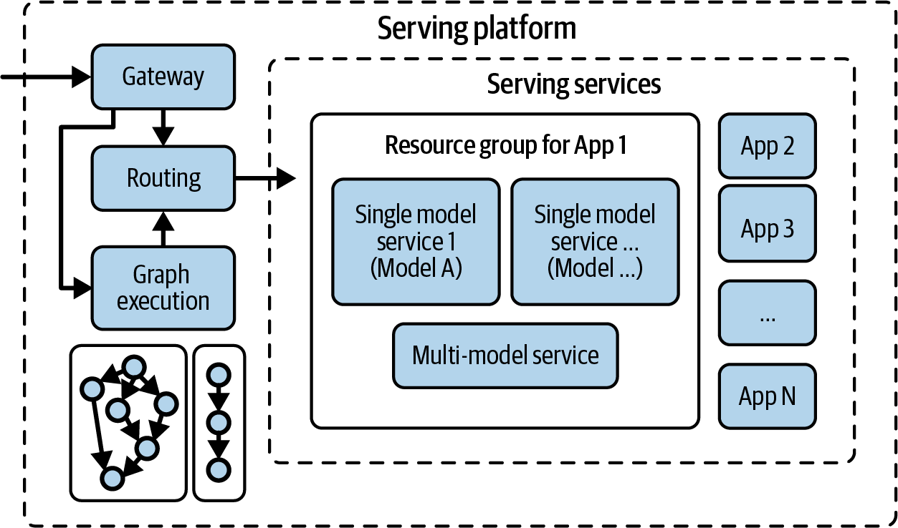
- Resource groups
- Separate the workload by application and business scenario. Each group gets its own CPU, GPU and memory quota and can mix service types (App 1 has two single-model services and one multi-model service).
- Graph execution
- Supports multistep inference workflows, using an engine such as Airflow or Ray. Each app team defines its workflow and deploys it to the engine. At prediction time the engine runs the workflow and, at each step, asks the routing component for the right serving group and service.
A real platform also has security and access control, metrics and monitoring, and deployment and DevOps integration. The book leaves them out of the diagram to keep attention on serving.
Chapter 1 recap
Summary on pages 29 to 30
| Paradigm | Idea | Strength | Weakness |
|---|---|---|---|
| On-device | Model runs on the user’s device through a runtime and wrapper | Low latency, offline, private, no cloud bill | Tight compute and power limits, hard updates, uneven hardware |
| Single-model service | One model version per dedicated web service | Best performance, isolation, simple scaling and debugging | Wasteful and unmanageable with many models |
| Multi-model service | Models share a container and load on demand behind an LRU cache | Most cost-efficient for many, rarely used models | Cold starts, swapping, complex routing and operations |
| Serving platform | Resource groups plus graph execution over both service types | Multi-model workflows and shared compute across many apps | The most moving parts |
- A model is architecture, data and execution code. Treat it as a program.
- Serving is an engineering discipline about deploying and integrating models, separate from training them.
- Understanding serving matters even when you rent it, because of integration, cost trade-offs, privacy and fine-tuned models.
- LLM inference is expensive, so optimisation is necessary for cost-effective deployment. The chapter summary says techniques such as KV cache with PagedAttention (vLLM) and RadixAttention (SGLang) can give about six times the throughput and a third of the latency with no extra infrastructure cost.
Test yourself
What three kinds of file make up a model?
Model data (weights, biases, configuration), model architecture, and model execution code.
Why store architecture and weights separately?
If the architecture changes, some checkpoint parameters no longer match (nonmatching keys). With separate files you can partially load the compatible ones, which supports fine-tuning, adding layers and incremental updates.
Define throughput and latency.
Throughput is the number of predictions processed per unit of time. Latency is the time to process a single prediction.
Why is a training framework a poor choice for serving?
Training optimises for throughput on large batches with backpropagation on big GPU clusters. Serving runs only the forward pass and optimises for low latency per request with efficient use of resources.
Why does plain round robin fall short for LLM requests?
Requests vary a lot in cost (5,000 tokens against 100). Round robin ignores that, so a busy container can receive the next request while another is idle. Alternatives: weighted round robin, least connections, least response time, dynamic load balancing.
What are cold start and model swapping?
Both add latency in multi-model serving. Cold start: the request waits while the model loads into memory. Model swapping: other models are evicted from memory to make room for the requested one.
How does the multi-model router solve routing and per-model scaling?
Each model has a replica count, and the router keeps a model-to-hosts map. Requests go to containers that already hold the model, and the replica count moves with traffic.
What two things does a serving platform add?
Resource groups with per-application quotas, and a graph execution engine (such as Airflow or Ray) for multistep inference workflows.
Chapter 2
Large language model serving
How a decoder-only Transformer produces text, what the KV cache and the prefill and decode phases are, and how a serving framework, streaming and batching build on them.
The chapter starts from the least code needed to serve an LLM and builds up from there, so you get a mental model of token generation before any infrastructure. It aims for intuition and does not require the mathematics.
How LLMs got here
Pages 32 to 35
The history matters because it explains the design choices and execution behaviour that inference work depends on.

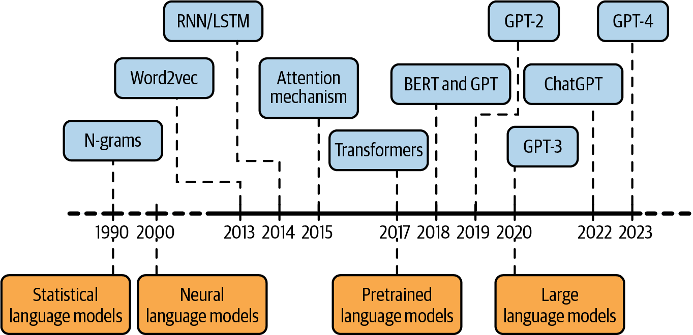
| When | What | Why it mattered |
|---|---|---|
| 2013 | Word2Vec (Mikolov et al., Google) | Dense word vectors that capture semantic relationships |
| 2013 to 2014 | RNNs, then LSTM and GRU | Model sequences. Gates and memory cells help with longer dependencies |
| 2017 | Transformer (“Attention Is All You Need”, Google) | Replaces recurrence with self-attention and positional encoding, giving parallel processing and long-range dependencies |
| 2018 | BERT and GPT | Pretrain on large unlabeled text, then fine-tune for a task |
| 2020 onward | GPT-3, ChatGPT, GPT-4 | Scaling model and data unlocks few-shot and zero-shot learning |
The RNN limitation that Transformers removed
RNN-based models process input one time step at a time, so they are hard to parallelise and inefficient on GPUs, and they still struggle with long-range dependencies.
BERT
- Bidirectional encoder: reads text in both directions
- Good at understanding: classification, contextual embeddings
GPT
- Unidirectional decoder: predicts the next token from what came before
- Good at generating: text, summaries, translation, answers
Scale: GPT-1 had 117 million parameters, GPT-3 had 175 billion, and DeepSeek R1 reached 671 billion. “Large language model” describes pretrained models with tens or hundreds of billions of parameters.
What “LLM” means in this book
LLM and Transformer both mean a decoder-only Transformer: only the decoder stack of the original design, as popularised by OpenAI’s 2018 GPT paper. It is the most common design for generative models such as GPT, Llama and Qwen. The definition keeps moving. In 2018 BERT’s few hundred million parameters counted as large, and today’s models are also judged on following instructions, using tools and multimodality.
Autoregressive generation
Pages 35 to 37
The defining behaviour
An LLM generates one token at a time. Each new token is predicted from the prompt plus all previously generated tokens, then appended to the input for the next step.

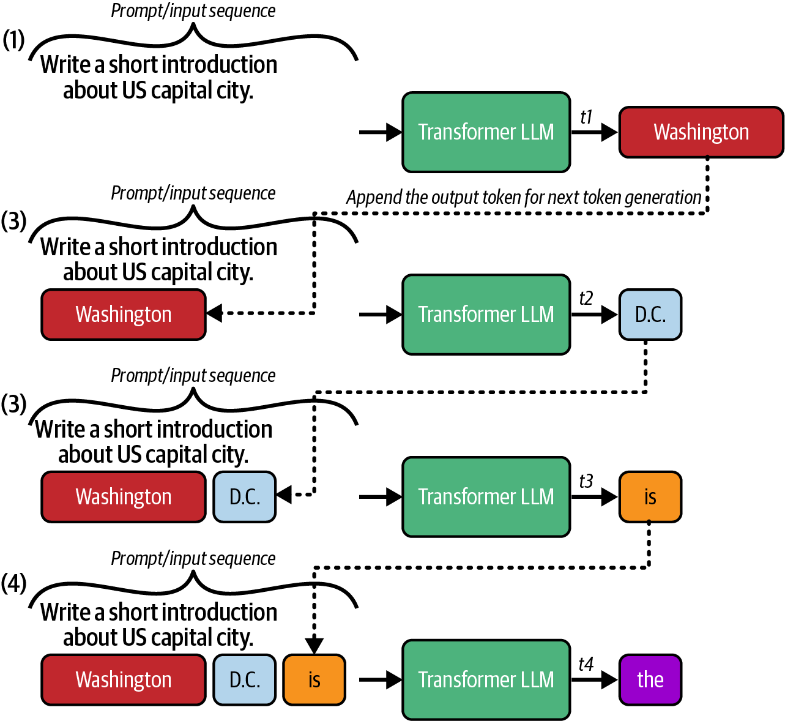
- The loop repeats until a stopping condition: a maximum length or a special stop token.
- A token is defined by the tokenizer. It may be a whole word, a subword or punctuation. On average one token is about 0.75 English words.
- The book uses input text, input sequence and prompt interchangeably.
Decoder-only Transformer architecture
Pages 37 to 43

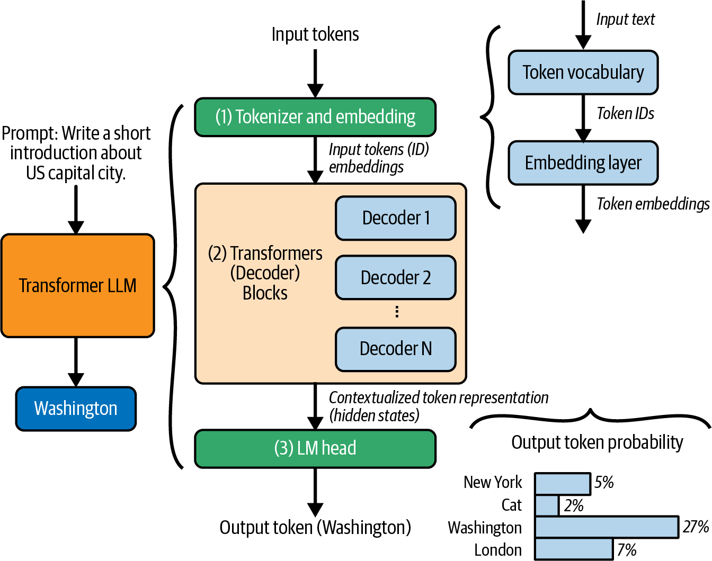
Step 1: tokenizer and embedding
- Break the text into tokens from a fixed vocabulary.
- Convert tokens into numeric token IDs.
- Map each ID to an embedding vector through the embedding layer.
Example: "Write a short introduction about the US capital city", with its quotation marks, becomes 11 tokens, then IDs such as [1100, 10930, 261, 4022, …], then one vector per ID like [-0.12, 0.55, 0.98, …].
Step 2: Transformer (decoder) blocks
- The core of the model, where most computation happens in both training and serving.
- Blocks are stacked (12, 24 or more layers) to build up contextual understanding.
- The output is the hidden states: a tensor of shape
[N, d], where N is the number of input tokens and d is the hidden size (768, 2048, 4096 and so on). - Usually only the final hidden state of the last token is used to predict the next token.
Step 3: language modeling (LM) head
- Maps hidden states to vocabulary logits, a score for every token in the vocabulary.
- Selects the output token from them, usually the one with the highest probability.
Inspect the model configuration first
model = AutoModelForCausalLM.from_pretrained(
"Qwen/Qwen2.5-0.5B", trust_remote_code=True, device_map="auto")
config = model.config
print(config.hidden_size, config.num_hidden_layers, config.num_attention_heads,
config.intermediate_size, config.vocab_size, config.max_position_embeddings)| Parameter | Value | Meaning |
|---|---|---|
| Hidden size | 896 | Size of each token’s vector |
| Number of layers | 24 | Transformer blocks |
| Attention heads | 14 | Per attention layer |
| Intermediate size | 4,864 | MLP inner layer |
| Vocabulary size | 151,936 | Tokens the model knows |
| Max position embeddings | 32,768 | Maximum sequence length |
| Total parameters | 494,032,768 | About 0.5 billion |
Why inspect it
The configuration lets you estimate compute needs such as GPU memory, choose a serving strategy (quantisation, batching, distillation, multi-GPU, offloading) and plan optimisations such as layer-wise parallelism or model sharding.
Inside one decoder block

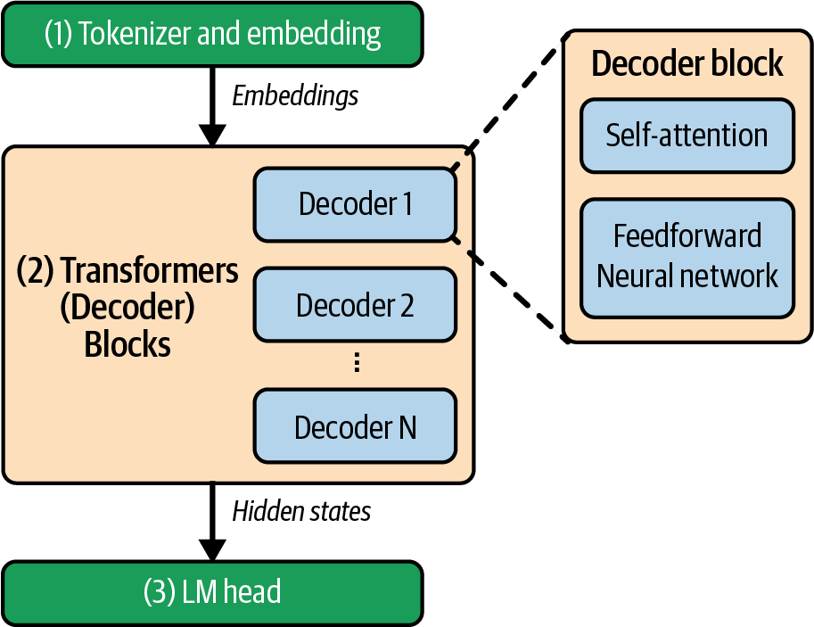
- Self-attention layer
- Adds context. It relates input tokens to each other by meaning and relative position, letting the model weigh every previous token differently when producing the next one.
- Feedforward neural network (FFN)
- Refines each token’s representation with a per-token transformation. It combines the context from attention with knowledge learned in training before the prediction is made.
Qwen 2.5 decoder layer, printed with named_children()
model: Qwen2Model
embed_tokens: Embedding
layers: ModuleList
0: Qwen2DecoderLayer
self_attn: Qwen2Attention
q_proj: Linear # query
k_proj: Linear # key
v_proj: Linear # value
o_proj: Linear # output
mlp: Qwen2MLP # the feedforward network
gate_proj: Linear
up_proj: Linear
down_proj: Linear
act_fn: SiLU
input_layernorm: Qwen2RMSNorm
post_attention_layernorm: Qwen2RMSNorm
1: Qwen2DecoderLayer
...Knowing this structure helps when planning optimisations. Attention-heavy blocks, for instance, can benefit from fused attention kernels or custom CUDA implementations, which later chapters cover.
Attention: how a token gets its context
Pages 43 to 46
In “I saw a dog chasing a squirrel, and it climbed up the tree”, it is ambiguous without context. Self-attention lets every token look at the other tokens and weigh how relevant each one is.
For the prompt “Write a short introduction about the US capital city”, at the token capital the model can:
- look back at
USto see this is a country’s capital and not financial capital, - use
introductionto keep the writing concise and general, - use
Writeto recognise an instruction.
The calculation
For every token the model computes three vectors: query (Q), key (K) and value (V).
- Take the dot product of the token’s query with the keys of all tokens in the sequence.
- Scale the result.
- Apply softmax to turn the scores into weights.
- Use the weights to take a weighted sum of the value vectors.
The result is the token’s updated representation, enriched with context from the whole sequence.
Multi-head attention
The model runs several attention calculations per token in parallel, called heads, each with its own Q, K and V projections. Different heads pick up different relationships (syntactic, positional, semantic). Their outputs are concatenated and passed through a linear layer.

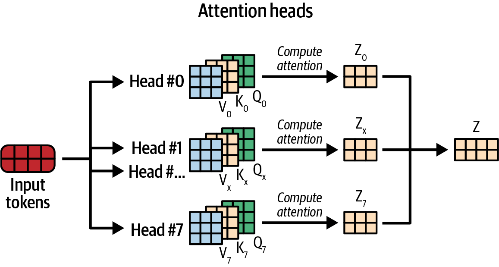

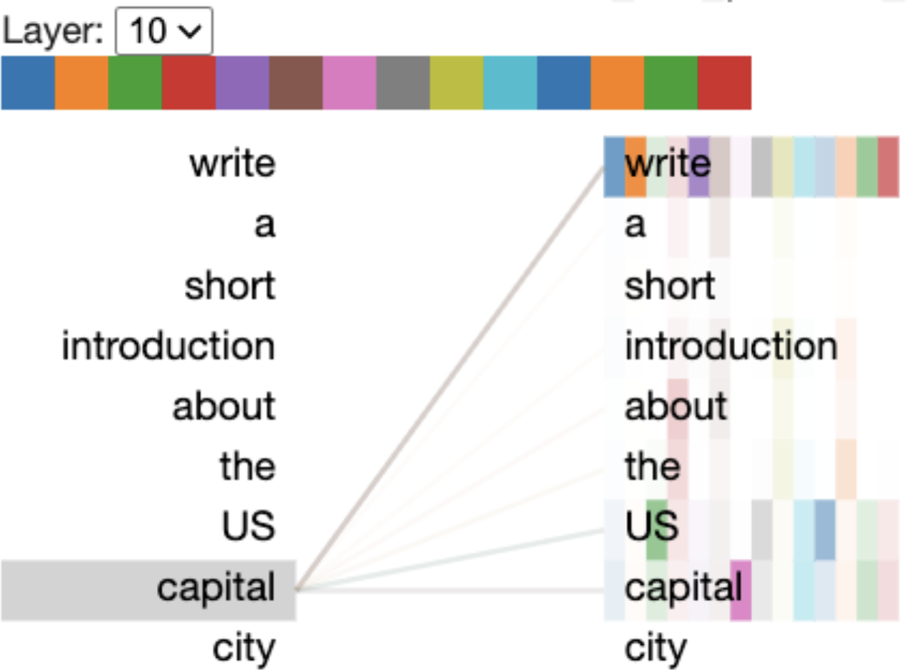
To reproduce this, load the model and tokenizer with output_attentions=True, run the model, and pass outputs.attentions and the token list to BertViz’s head_view(attention, tokens).
What a serving engineer needs from this
You need the concept, and the matrix maths is optional. Attention is compute-intensive, most of all during prefill, and its memory and latency costs scale with input sequence length. This is the knowledge behind tuning inference, KV caching and spreading work across GPUs.
Generation, line by line
Pages 46 to 51
The purpose here is a serving-oriented picture of how an LLM executes, because that execution pattern drives almost every design decision in a serving system. The demos use a single request and a single sequence and are not production code.
The easy way: a Hugging Face pipeline
generator = pipeline('text-generation', model='Qwen/Qwen2.5-0.5B')
prompt = "Write a short introduction about the US capital city."
generated_text = generator(prompt, max_length=50, num_return_sequences=1)
print(generated_text[0]['generated_text'])What generator() does underneath

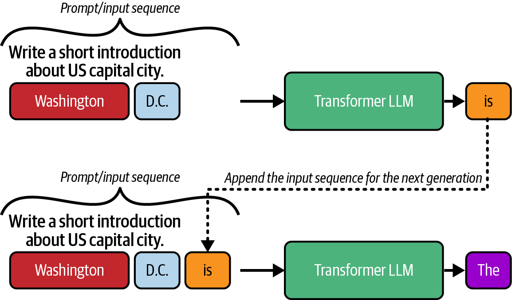
AutoModelForCausalLM replaces the pipeline here because it gives full control over inputs and decoding.
The generation loop, condensed from Example 2-1
tokenizer = AutoTokenizer.from_pretrained(model_name, trust_remote_code=True)
model = AutoModelForCausalLM.from_pretrained(model_name, trust_remote_code=True).to("cuda")
idx = tokenizer(prompt, return_tensors="pt").input_ids.to(model.device)
for _ in range(max_new_tokens):
with torch.no_grad():
outputs = model(idx) # the WHOLE sequence, every step
logits = outputs.logits[:, -1, :] # raw scores, last position only
probas = torch.softmax(logits, dim=-1) # scores to probabilities
idx_next = torch.multinomial(probas, num_samples=1) # sample the next token
idx = torch.cat((idx, idx_next), dim=1) # append it to the input
if idx_next.item() == tokenizer.eos_token_id: # stop at end-of-sequence
break
generated_text = tokenizer.decode(idx[0], skip_special_tokens=True)Logits are the raw prediction scores for each candidate token.

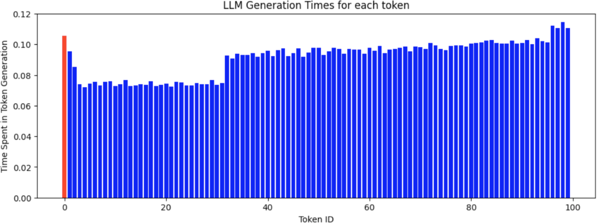
The inefficiency
Apart from the first token, per-token time keeps rising. Each new token lengthens the input, and the model recomputes attention for all previous tokens on every step. That repeated work over tokens it has already processed is expensive and unnecessary.

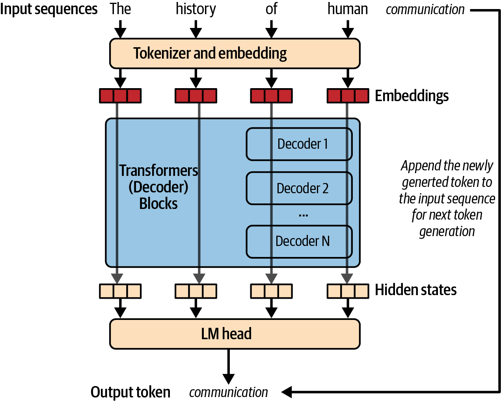
KV cache
Pages 51 to 54
The idea
Store the attention keys and values computed at each layer for tokens already processed. On each new step, process only the newest token and reuse the cached results for everything before it. Generation changes from full-sequence recomputation to incremental work, trading more memory for much less compute.

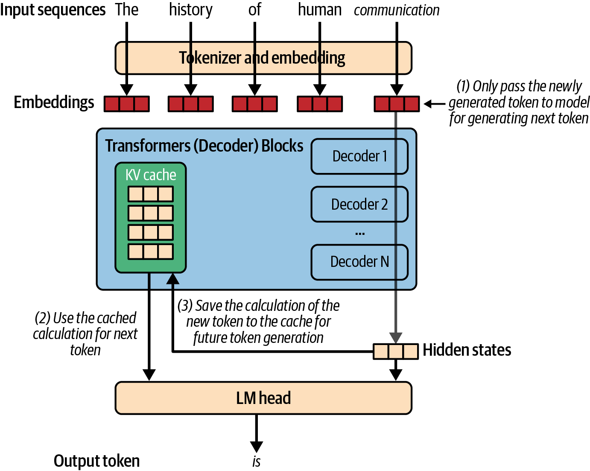
The same loop with the KV cache, condensed from Example 2-2
past_key_values = None # (1) the cache starts empty
input_ids = idx # the full prompt, first step only
for _ in range(max_new_tokens):
with torch.no_grad():
outputs = model(input_ids=input_ids,
past_key_values=past_key_values, # (2) reuse the cache
use_cache=True)
past_key_values = outputs.past_key_values # (3) save the updated cache
logits = outputs.logits[:, -1, :]
probas = torch.softmax(logits, dim=-1)
next_id = torch.multinomial(probas, num_samples=1)
input_ids = next_id # (4) only the NEW token goes back in
idx = torch.cat((idx, next_id), dim=1) # idx still holds the full text
if next_id.item() == tokenizer.eos_token_id:
break| No cache (Example 2-1) | KV cache (Example 2-2) | |
|---|---|---|
| Model input each step | Entire sequence so far | Only the newly generated token, plus past_key_values |
| After each step | Append the token to the input | Update the cache from outputs.past_key_values |
| Time for 100 tokens | 9.1205 s | 3.1416 s |
| Per-token time | Climbs as the sequence grows | Stable after the first token |
By my arithmetic that is roughly 2.9 times faster on this small model and short run.

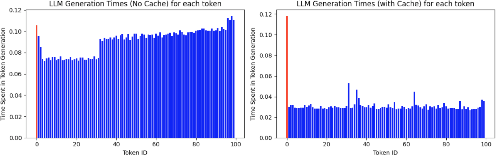
Many more advanced ways to design and manage KV caches exist. The book returns to them in chapters 6 and 7.
Prefill and decode
Pages 54 to 56
These two terms come up constantly in LLM performance work.
Prefill
- Also called prompt processing
- The whole prompt is processed at once, in parallel
- Compute-intensive: attention runs across all prompt tokens, quadratic in sequence length
- Produces the first token
- Dominates with long prompts, such as a 500-page PDF
Decode
- Also called token-by-token generation
- One token per step, repeated. Attention work focuses on the newest token
- Memory-intensive: model weights are loaded again and again and the KV cache keeps growing
- Produces every token after the first
- Dominates with short prompts and long outputs, such as chatbot replies and stories

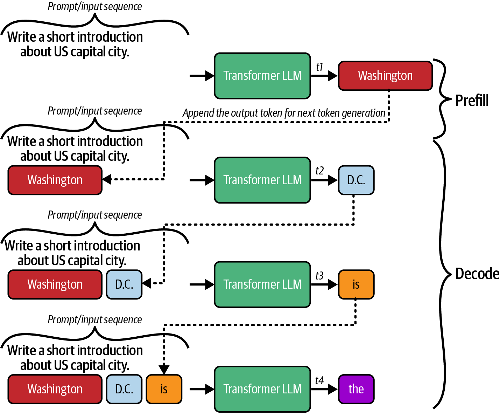

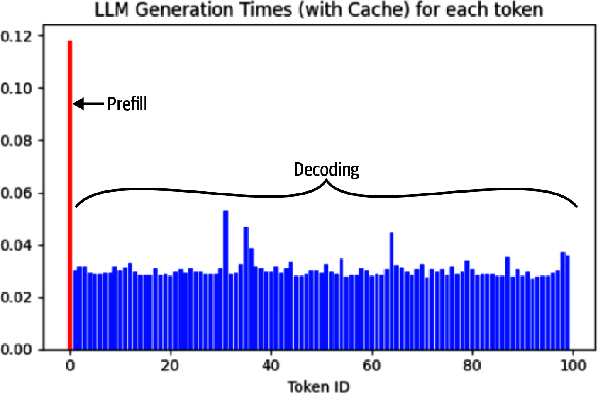
Why the distinction matters
The two phases stress hardware differently. Knowing which one dominates your workload tells you which bottleneck to work on, and it guides optimisation and capacity planning.
Serving with a framework: vLLM
Pages 57 to 59
Hand-written loops teach the mechanics. Real applications use serving frameworks such as vLLM and SGLang: systems that load pretrained models and expose them through APIs (usually REST or gRPC) for real-time or batch inference. Training frameworks like PyTorch and TensorFlow are built around model development and gradients.
What a serving framework adds beyond running inference:
- Efficient decoding with KV-cache reuse
- Request scheduling, such as batching or micro-batching
- Multi-user concurrency
- Token streaming, cancellation and interruption handling
- New research optimisations (paged attention, speculative decoding) without you reimplementing them
Basic use
from vllm import LLM, SamplingParams
llm = LLM(model="Qwen/Qwen2.5-0.5B", dtype="float16") # load the model
inference_params = SamplingParams(temperature=0.8, top_p=0.95, max_tokens=128)
outputs = llm.generate([prompt], inference_params) # run generation
for output in outputs:
print(f"Generated text: {output}")vLLM has two groups of settings. Model-loading options on LLM(...) cover memory management, PagedAttention and prefix caching, KV cache limits, performance features such as chunked prefill, and distributed serving. Inference parameters on SamplingParams(...) follow the conventions of OpenAI’s text completion API:
| Parameter | What it controls |
|---|---|
temperature | Randomness. 0.0 is deterministic |
top_p | Nucleus sampling |
top_k | Top-k sampling |
max_tokens | Maximum tokens to generate |
stop | Stop sequences, such as ["\n", "###"] |
frequency_penalty, presence_penalty, repetition_penalty | Discourage repetition |
skip_special_tokens | Leave special tokens out of the output |
vLLM against Hugging Face Transformers
| Library | Time |
|---|---|
| Hugging Face pipeline | 19.58 s |
| vLLM | 1.12 s |
That is a 17 times speedup on a single prompt, and the gap widens with concurrent or batched inference. In many benchmarks vLLM reaches 10 to 20 times the throughput of the Hugging Face .generate() API.
Best practice: start simple, then optimise
Prototype with Hugging Face Transformers because it is easy to use. Move to a framework like vLLM for production, then tune its serving configuration for latency, throughput and concurrency for your model and use case.
Streaming
Pages 60 to 61
The model produces tokens one by one, but llm.generate() waits for the whole output before returning anything. In a chatbot that is a delay of seconds to minutes with nothing on screen, which hurts engagement and retention.
LLM streaming
Return output incrementally, token by token or in small chunks, as it is generated.
Streaming with vLLM, condensed
engine = AsyncLLMEngine.from_engine_args(
AsyncEngineArgs(model="Qwen/Qwen2.5-0.5B", dtype="float16"))
async def generate_text(prompt: str, max_tokens: int = 100):
sampling_params = SamplingParams(temperature=0.0, max_tokens=max_tokens, stop=["\n"])
results_generator = engine.generate(
prompt=prompt,
sampling_params=sampling_params,
request_id="test-request") # unique ID for this request
final_output = None
async for request_output in results_generator:
final_output = request_output
for chunk in request_output.outputs:
print(chunk.text, end="", flush=True) # a web service would yield here
return final_output- Use
AsyncLLMEnginewhere the blocking version usedLLM. generate()returns an asynchronous stream that you read withasync for.- Cancellation:
engine.abort(request_id)stops a generation partway. The user can cut off an answer that is going wrong, and the server stops spending compute on it, which matters for cost in production.
Batching
Pages 61 to 63
One prompt at a time is fine for prototyping and a bottleneck at volume. The book’s examples: summarising 100,000 documents, indexing 5,000 PDFs, serving 20,000 concurrent chatbot users.
Batching
Group several input requests and process them together in a single forward pass, so the model generates outputs for many prompts in parallel.

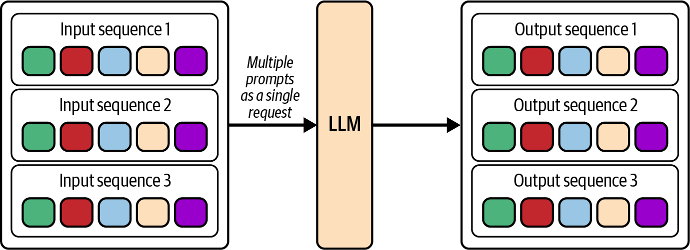
It works well for Transformers because matrix multiplications and attention can run in parallel across sequences. The model weights are shared and the GPU is built for parallel work, so extra requests add little overhead.
prompts = [
"What is the meaning of life?",
"Write a short story about a robot learning to love.",
"Explain quantum physics in simple terms.",
"Translate 'Hello, world!' into Spanish.",
]
sampling_params = SamplingParams(temperature=0.8, top_p=0.95, max_tokens=100)
vllm_outputs = llm.generate(prompts, sampling_params) # all four in one batch
for prompt in prompts: # versus one at a time
llm.generate([prompt], sampling_params)| How | Total time |
|---|---|
| One batch | 1.0626 s |
| One by one | 2.3865 s |
A 2.2 times throughput improvement from batching alone.
Next step: continuous batching
New requests are added to the running batch as others finish. A 2023 Anyscale study found it can raise LLM inference throughput by up to 23 times while greatly reducing p50 latency. Chapter 6 of the book covers it.
Chapter 2 recap
Summary on pages 63 to 64
- In this book an LLM is a decoder-only Transformer: tokenizer and embedding, then stacked decoder blocks (self-attention plus FFN), then an LM head.
- Generation is autoregressive: one token per step, each fed back as input.
- Attention gives tokens their context. It is the expensive part and its cost grows with sequence length.
- The KV cache stores per-layer keys and values so each step handles only the new token. It uses more memory and far less compute.
- Prefill processes the whole prompt in parallel and is compute-heavy. Decode goes token by token and is memory-heavy. Find out which one dominates your workload.
- Serving frameworks such as vLLM package these optimisations. Streaming improves responsiveness and batching improves throughput.
Test yourself
What are the three components of a decoder-only Transformer, in order?
Tokenizer and embedding, Transformer (decoder) blocks, and the language modeling (LM) head.
What does “autoregressive” mean for an LLM?
It generates one token at a time, predicting each from the prompt and all previously generated tokens, and appends each new token to the input for the next step. It stops at a maximum length or a stop token.
What is the shape of the hidden states, and which part is used to predict the next token?
[N, d]: N input tokens by hidden size d. Usually only the final hidden state of the last token is used.
What are Q, K and V, and how do they produce attention?
Query, key and value vectors computed for each token. Take the dot product of a token’s query with all keys, scale, apply softmax to get weights, then take the weighted sum of the values.
Without a KV cache, why does each token take longer than the one before?
Every new token is appended to the input and the model recomputes attention over the entire, longer sequence at each step.
What does the KV cache store and what is the trade-off?
The attention keys and values computed at each layer for earlier tokens. It trades higher memory use for large compute savings, because only the new token is processed.
Which phase is compute-intensive and which is memory-intensive, and why?
Prefill is compute-intensive: attention across all prompt tokens at once, quadratic in length. Decode is memory-intensive: model weights are loaded repeatedly and the KV cache grows.
A user uploads a 500-page PDF and asks for a one-line answer. Which phase is the bottleneck?
Prefill, because the prompt is very long and the output is short.
How do you stream with vLLM and cancel a request?
Use AsyncLLMEngine, read the stream from engine.generate(...) with async for, and call engine.abort(request_id) to cancel.
What is batching, and what is continuous batching?
Batching groups several requests into a single forward pass so they are processed in parallel. Continuous batching adds new requests to the running batch as others complete.
Numbers worth remembering
All from the book’s examples in chapters 1 and 2
| Number | What it refers to | Page |
|---|---|---|
| 30% to 60% cheaper | Open source LLM on EC2 compared with managed serving on SageMaker | 9 |
| 50% more | OpenAI’s premium for serving a fine-tuned model (early 2025) | 9 |
| 10 times | Cost of an LLM request relative to keyword search (Hennessy, 2023) | 12 |
| 16,384 H100 GPUs | Used to train Llama 3 405B | 13 |
| 14 to 24 times | vLLM throughput over HF Transformers, one completion per request | 14 |
| 2.2 to 2.5 times | vLLM throughput over TGI, one completion per request | 14 |
| 38 to 600 TPS | DeepSeek R1 on vLLM after enabling FP8 MLA kernels and a larger batch size | 15 |
| 0.75 words | Average English words per token | 35 |
| 117M, 175B, 671B | Parameters in GPT-1, GPT-3 and DeepSeek R1 | 34 |
| 9.12 s and 3.14 s | 100 tokens without and with the KV cache (Qwen2.5-0.5B) | 50, 53 |
| 19.58 s and 1.12 s | Hugging Face pipeline and vLLM on the same prompt (17 times) | 59 |
| 2.2 times | Four prompts batched against one by one on vLLM | 63 |
| Up to 23 times | Throughput gain from continuous batching (Anyscale, 2023) | 63 |
Glossary
Terms introduced in chapters 1 and 2
- Autoregressive
- Generating one token at a time, each conditioned on everything before it.
- Autoscaling
- Automatically adding or removing serving instances based on monitored metrics.
- Batching
- Processing several requests together in one forward pass.
- Cold start
- Latency from holding a request while its model loads into memory.
- Containerization
- Packaging an application with its dependencies so it runs consistently anywhere.
- Continuous batching
- Adding new requests to a running batch as others complete.
- Decode phase
- Token-by-token generation after the first token. Memory-intensive.
- Delegate
- A runtime component that offloads operations from the CPU to a GPU or other accelerator.
- Embedding
- The numeric vector a token ID is mapped to.
- FFN
- Feedforward neural network: the per-token refinement step in each decoder block.
- Hidden states
- Contextualised token representations output by the decoder blocks, with shape [N, d].
- Horizontal scaling
- Scaling out by running more instances across machines.
- Inference
- A prediction on new data. Used interchangeably with serving and prediction.
- Intra-node and inter-node serving
- Several GPUs on one machine, versus spreading a model across machines.
- KV cache
- Stored attention keys and values for earlier tokens, reused so only the new token is computed.
- Latency
- Time to process a single prediction.
- LM head
- The layer that turns hidden states into vocabulary logits and picks the output token.
- Logits
- Raw prediction scores for each token in the vocabulary.
- LRU cache
- Least recently used cache, which decides which loaded model to evict.
- Model runtime
- Software that executes models efficiently on specific hardware (LiteRT, ONNX Runtime, Core ML).
- Model swapping
- Evicting models from memory to make room for a newly requested one.
- Model wrapper
- App-side module that hides runtime details: preprocess, load, execute, postprocess.
- Multi-head attention
- Several attention calculations in parallel, each with its own Q, K and V projections.
- Nonmatching keys
- Checkpoint parameters that no longer fit a changed architecture.
- Partial loading
- Loading the compatible parameters and skipping the rest.
- Prefill phase
- Processing the whole prompt at once to produce the first token. Compute-intensive.
- Replica
- The number of instances of a model hosted across serving containers.
- Self-attention
- The mechanism that lets each token weigh the relevance of other tokens.
- Serving framework
- A system built to load models and expose them for efficient inference (vLLM, SGLang, Triton).
- Streaming
- Returning output token by token as it is generated.
- Throughput
- Predictions processed per unit of time.
- Token
- A unit of text defined by the tokenizer: a word, subword or punctuation mark.
- Vertical scaling
- Scaling up with more powerful GPUs, and splitting a large model across them.